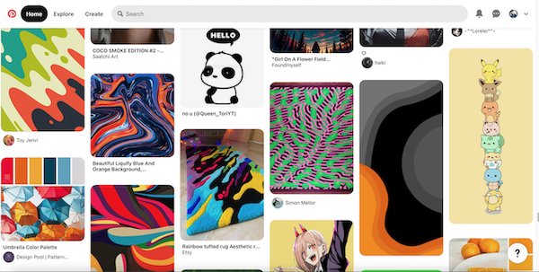
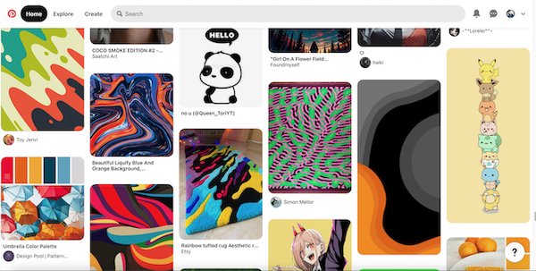

Spotify has a great selection of media to listen to. Phoebe likes listening to bsd.u Radio for his chill lo-fi beats. Because Phoebe tends to have many thoughts racing when shes balancing her work and personal life, she tends to listen to upbeat but also calming rhythms. Phoebe really likes the daylist options that the Spotify app offers. She likes how the app remembers certain types of songs and then curates a playlist for her.
Phoebe also utilizes listening to podcasts and audiobooks on Spotify during her driving commute to campus. Her drive time may vary, but she can listen to a book in about a week or so. Phoebe tends to read a book that interests her and then finds it again as an audiobook. She also likes listening to podcasts and listen to interviews that make her laugh. Her choices regarding Spotify media reflect a core personality trait in Phoebe's personal and digital existence which is to always find something good and simple to unwind with.
 

Adobe Creative always offers something new to find in color for inspiration to create. Adobe Lightroom is a program that Phoebe is learning to use to edit her personal photos and interests. Using Lightroom is different from when she used to develop natural photos in a actual dark room, but this program is another free digital canvas for Phoebe to learn about imagery and perspective. While Phoebe does mostly use the Adobe apps for school related projects, she also thinks they're fun to explore leisurely.
Pinterest is An app that Phoebe always has in her digital rotation. Her Pinterest feed displays characters she likes. She has built a daily habit now of just of randomly scrolling on Pinterest just to see color combinations and abstract art. Phoebe relies on these media habits for creative juice and helps her out of artists block. Phoebe admittedly knows she has much to learn to thrive as a creative, but remains grateful that there are many programs like these that support her visionary flow and artistic identity.